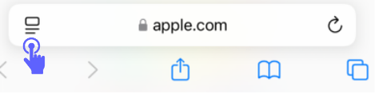
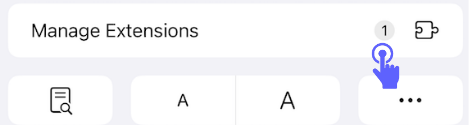
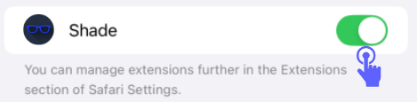
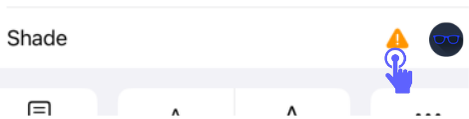
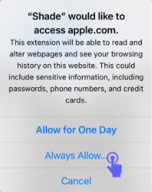
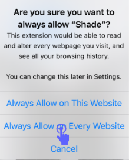

How to Enable Shade
1
Open Safari
Tap the Safari icon on your Home Screen to launch it.
2
Access Safari Settings
Tap on the icon in the address bar (on the left side).

3
Manage Extensions
Tap on "Manage Extensions" in the dropdown menu.

4
Enable Shade
Find "Shade" in the list and toggle the switch to ON position.

5
Tap Shade
Now tap Shade

6
Allow Permissions
If prompted, tap "Always Allow" and "Always Allow on Every Website" to give Shade the necessary permissions.


Tip
After enabling the extension, you can customize its settings by tapping on the extension icon in Safari's toolbar.